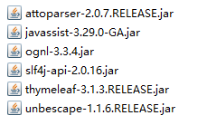
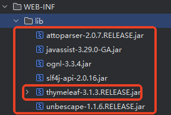
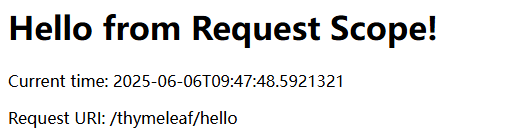
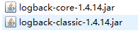
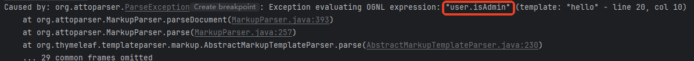
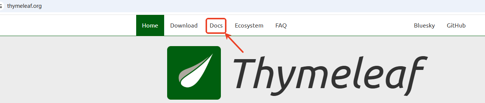
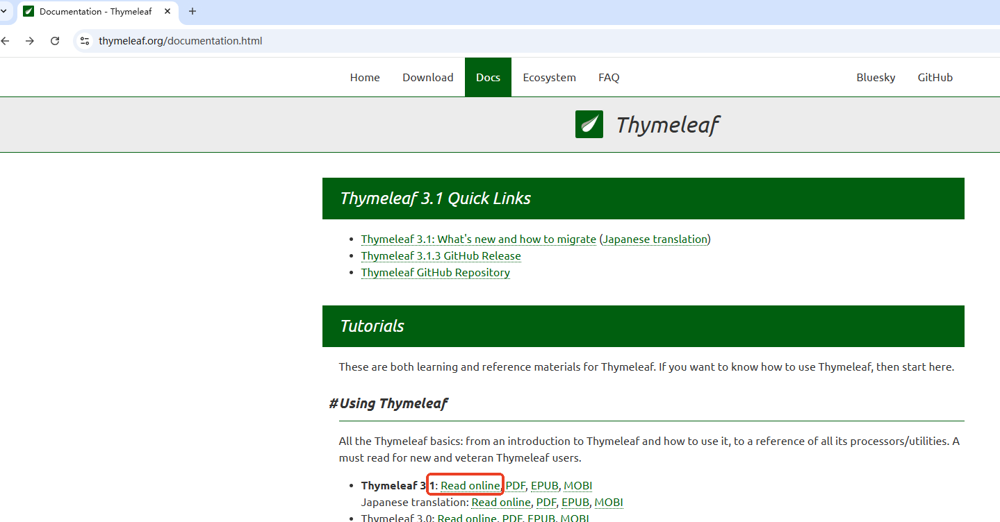
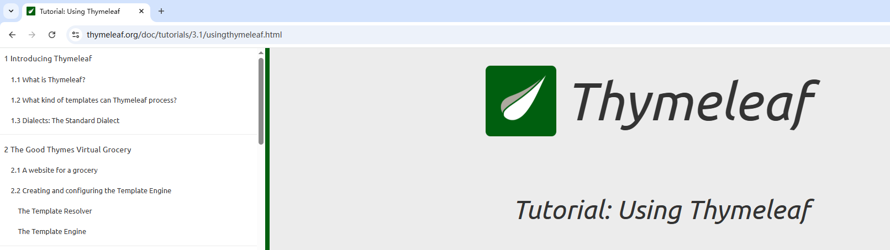
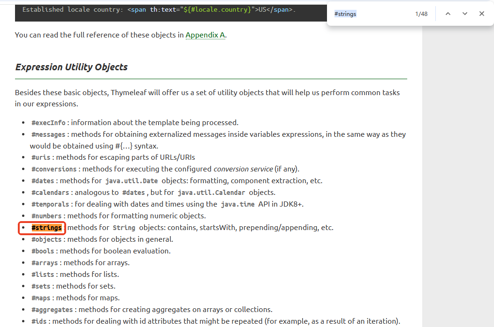

前端代码（HTML/CSS/JS）与后端Java逻辑混杂在同一个Servlet中，违反关注点分离（SoC）原则。修改前端时需要重新编译Servlet，调试困难；团队协作时前后端开发者互相干扰。
Java字符串拼接HTML（如out.println("<div>...</div>")）极其繁琐且易错。
XSS漏洞：手动拼接HTML容易遗漏转义导致 XSS 攻击。
XSS（Cross-Site Scripting）是一种攻击方式，黑客通过注入恶意脚本（通常是JavaScript）到网页中，使其在其他用户的浏览器里执行。后果：窃取用户Cookie、篡改页面内容、重定向到恶意网站等。
假设有一个Servlet，接收用户输入的name并显示在页面上：
String userName = request.getParameter("name"); // 用户输入
out.println("<div>Welcome, " + userName + "!</div>");
如果用户输入的是：
<script>alert('XSS Attack!');</script>
最终生成的HTML会是：
<div>Welcome, <script>alert('XSS Attack!');</script>!</div>
浏览器会执行这段脚本，弹出一个警告框（实际攻击可能是窃取Cookie或跳转到恶意网站）。如何解决这个问题，可以手动转义。
但手动转义容易遗漏，因此现代框架（如JSP、Thymeleaf、React、Vue）默认会自动转义。
可测试性差：前端逻辑与后端深度耦合，无法独立测试。
多端适配困难：同一Servlet无法灵活响应Web/移动端（不同HTML结构或API格式）。
官网地址：https://www.thymeleaf.org/
引用官网（2025 年 6 月）： Thymeleaf 3.1.3.RELEASE is the latest version. It requires Java SE 8 or newer（翻译：目前最新发布版 3.1.3，要求 JDK 版本最低 8）
Thymeleaf 是一个用于 Web 和独立环境的现代 Java 模板引擎，主要用于处理 HTML、XML、JavaScript 等文件，支持自然模板（允许静态原型直接作为模板使用）。它由Daniel Fernández领导的团队开发，最初于2011年发布，旨在替代 JSP，提供更优雅的模板解决方案。Thymeleaf 强调语法简洁、与 Spring 框架深度集成，常用于 Spring Boot 项目。目前（截至 2025 年 6 月）仍在积极维护，最新稳定版本为 3.1.3，社区活跃且持续更新。
Java模板引擎是一种用于动态生成文本（如HTML、XML、邮件内容等）的工具，它通过将静态模板文件和动态数据结合，生成最终的输出内容。
现代开发中项目多数是前后端分离，Thymeleaf 这种模板技术市场份额在减少，为什么还要保留 Thymeleaf？
模板文件：
<!-- 模板文件 index.html -->
<html>
<body>
<p th:text="'Hello, ' + ${name}">Hello, Guest</p>
</body>
</html>
Thymeleaf 的处理步骤：
th:text表达式。${name}（从 Servlet 作用域中获取值或从 Spring MVC 的 Model 中获取值）。Hello, Guest）为动态值（如Hello, Alice）。提示：
th:text、th:if）实现。jar 包从 apache 提供的 maven 中央仓库中下载，地址：https://repo.maven.apache.org/maven2/

将 jar 包拷贝 WEB-INF/lib目录下，并且只需要将 thymeleaf-3.1.3.RELEASE.jar右键添加到 classpath 中：

写一个 ServletContextListener 监听器，在服务器启动阶段，初始化 Thymeleaf 的模板引擎：
package com.jkweilai.thymeleaf.listeners;
import jakarta.servlet.ServletContext;
import jakarta.servlet.ServletContextEvent;
import jakarta.servlet.ServletContextListener;
import jakarta.servlet.annotation.WebListener;
import org.thymeleaf.TemplateEngine;
import org.thymeleaf.templatemode.TemplateMode;
import org.thymeleaf.templateresolver.WebApplicationTemplateResolver;
import org.thymeleaf.web.servlet.JakartaServletWebApplication;
@WebListener
public class ThymeleafInitializer implements ServletContextListener {
@Override
public void contextInitialized(ServletContextEvent sce) {
// 获取ServletContext对象
ServletContext application = sce.getServletContext();
//【第一步】得到适配器
// 创建Thymeleaf与Servlet容器的桥梁对象（相当于一个适配器）
JakartaServletWebApplication jakartaServletWebApplication = JakartaServletWebApplication.buildApplication(application);
// 创建模板解析器并关联到Servlet环境
WebApplicationTemplateResolver templateResolver = new WebApplicationTemplateResolver(jakartaServletWebApplication);
// 【第二步】适配器传给解析器
// 设置模板文件存放的基础路径
templateResolver.setPrefix("/WEB-INF/templates/");
// 设置模板文件的后缀名
templateResolver.setSuffix(".html");
// 指定模板处理模式为HTML格式
templateResolver.setTemplateMode(TemplateMode.HTML);
// 禁用模板缓存（开发环境建议关闭）
templateResolver.setCacheable(false);
// 【第三步】解析器给模板引擎
// 创建模板引擎
TemplateEngine templateEngine = new TemplateEngine();
// 模板引擎关联模板解析器
templateEngine.setTemplateResolver(templateResolver);
// 将Thymeleaf与Servlet容器的桥梁对象存储到应用域中
application.setAttribute("jakartaServletWebApplication", jakartaServletWebApplication);
// 将模板引擎对象存储到应用域中
application.setAttribute("templateEngine", templateEngine);
}
}
package com.jkweilai.thymeleaf.servlets;
import jakarta.servlet.ServletContext;
import jakarta.servlet.ServletException;
import jakarta.servlet.annotation.WebServlet;
import jakarta.servlet.http.HttpServlet;
import jakarta.servlet.http.HttpServletRequest;
import jakarta.servlet.http.HttpServletResponse;
import org.thymeleaf.TemplateEngine;
import org.thymeleaf.context.WebContext;
import org.thymeleaf.web.servlet.JakartaServletWebApplication;
import java.io.IOException;
import java.time.LocalDateTime;
import java.time.format.DateTimeFormatter;
@WebServlet("/hello")
public class HelloServlet extends HttpServlet {
@Override
protected void doGet(HttpServletRequest request, HttpServletResponse response) throws ServletException, IOException {
// 向request域中绑定数据
request.setAttribute("message", "Hello from Request Scope!");
request.setAttribute("currentTime", LocalDateTime.now().format(DateTimeFormatter.ISO_LOCAL_DATE_TIME));
request.setAttribute("requestURI", request.getRequestURI());
// 交给模板引擎去处理
response.setContentType("text/html;charset=UTF-8");
ServletContext application = getServletContext();
// 从上下文中获取Thymeleaf的Servlet适配器实例
JakartaServletWebApplication jakartaServletWebApplication = (JakartaServletWebApplication)application.getAttribute("jakartaServletWebApplication");
// 从上下文中获取Thymeleaf模板引擎实例
TemplateEngine templateEngine = (TemplateEngine) application.getAttribute("templateEngine");
// 创建Thymeleaf上下文对象，包装当前请求/响应和语言环境
WebContext webContext = new WebContext(jakartaServletWebApplication.buildExchange(request, response), request.getLocale());
// 使用模板引擎渲染名为"hello"的模板，结果写入响应输出流
templateEngine.process("hello", webContext, response.getWriter());
}
}
在WEB-INF/templates/下创建hello.html:
<!DOCTYPE html>
<!--必须添加 th 命名空间-->
<html xmlns:th="http://www.thymeleaf.org">
<head>
<meta charset="UTF-8">
<title>first thymeleaf</title>
</head>
<body>
<!-- 直接从request域获取数据 -->
<h1 th:text="${message}">Default Message</h1>
<p>Current time: <span th:text="${currentTime}"></span></p>
<p>Request URI: <span th:text="${requestURI}"></span></p>
</body>
</html>
http://localhost:8080/thymeleaf/hello
thymeleaf 添加日志框架 logback。这样 thymeleaf 运行出错时会自动打印日志信息。便于调试。
我们项目中已经存在 slf4j-api-2.0.16.jar。这个是日志门面，还需要一个具体的实现 slf4j 门面的日志框架，logback就是一个具体的实现。
首先我们需要引入 logback 的 jar 包，放到 WEB-INF/lib 目录下：

在类的根路径下新建 logback.xml，然后将配置以下内容：
<configuration>
<!-- 只输出 ERROR 级别及以上的日志 -->
<logger name="org.thymeleaf" level="ERROR"/>
<!-- 关闭 Thymeleaf 初始化 DEBUG 日志 -->
<logger name="org.thymeleaf.TemplateEngine" level="INFO"/>
<!-- 控制台输出格式简化 -->
<appender name="CONSOLE" class="ch.qos.logback.core.ConsoleAppender">
<encoder>
<pattern>%d{HH:mm:ss} [%thread] %-5level - %msg%n</pattern>
</encoder>
</appender>
<!-- 全局日志级别设为 WARN -->
<root level="WARN">
<appender-ref ref="CONSOLE"/>
</root>
</configuration>
<!DOCTYPE html>
<html xmlns:th="http://www.thymeleaf.org"> <!-- 启用Thymeleaf命名空间 -->
<head>
<title th:text="${pageTitle}">默认标题</title> <!-- 静态默认值会被动态替换 -->
</head>
<body>
<!-- 所有Thymeleaf属性以 th: 开头 -->
</body>
</html>
关键点：
th: 命名空间声明<div th:text="${user.name}">用户名默认值</div> <!-- 即使是一段HTML代码，也只是当做普通文本处理，转义，防止XSS攻击 -->
<div th:utext="${htmlContent}">HTML内容</div> <!-- 对HTML代码解释执行，不转义，存在XSS攻击风险，谨慎使用 -->
和 if/else不一样。两个是独立的，没有关系。
th:if来说，为 true时显示元素。th:unless来说，为 false时显示元素。<div th:if="${user.isAdmin}">管理员可见</div>
<div th:unless="${user.isGuest}">非访客可见</div>
有这样一个 VO（View Object：视图对象，负责专门在页面上展示数据的对象）UserVO，代码如下：
package com.jkweilai.thymeleaf.model.vo;
public class UserVO {
private String username;
private Boolean isAdmin; // 注意这个属性哈。
public UserVO() {
}
public UserVO(String username, Boolean isAdmin) {
this.username = username;
this.isAdmin = isAdmin;
}
public String getUsername() {
return username;
}
public void setUsername(String username) {
this.username = username;
}
public Boolean getAdmin() { // isAdmin 属性生成的get方法不是getIsAdmin()，而是getAdmin()。
return isAdmin;
}
public void setAdmin(Boolean admin) {
isAdmin = admin;
}
}
在 Servlet 当中创建 UserVO 对象，代码如下：
UserVO user = new UserVO("admin", true);
request.setAttribute("user", user);
thymeleaf 的模板文件中是这样写的：
<div th:if="${user.isAdmin}"><span th:text="${user.username}"></span>是管理员</div>
测试时出现了以下异常：

这个问题是因为我们使用了 ${user.isAdmin}，thymeleaf 底层会去找 user对象的 getIsAdmin()方法，但是这个方法不存在而导致的。针对这个问题，有多种解决方案，最直接的方式是将模板文件中的代码修改一下，修改为：
<div th:if="${user.admin}"><span th:text="${user.username}"></span>是管理员</div>
这样就可以访问了。
<ul>
<li th:each="item : ${items}" th:text="${item.name}">商品示例</li>
</ul>
关键点：
th:each="item : ${集合}" 语法<li th:each="item,status : ${items}" th:text="|${status.index} ======== ${item.name}|"></li>
双竖线 |...| 的作用是定义文本字面量表达式（Literal Expressions），它是一种简化字符串拼接的语法。
管道符内的内容会被视为一个整体，Thymeleaf 会自动将其拼接成一个字符串，无需手动加引号或 + 连接。
<a th:href="@{/user/details(id=${userId})}">用户详情</a>
关键点：
@{} 自动生成上下文路径（避免硬编码）@{/path(param1=${val1}, param2=${val2})}<form th:action="@{/save}" th:object="${user}" method="post">
<input type="text" id="username" name="username" th:value="*{username}" placeholder="用户名">
<input type="submit" value="保存">
</form>
关键点：
th:object 绑定表单对象th:value="*{属性名}"<!-- 定义片段 -->
<div th:fragment="header">
<h1>公共头部</h1>
</div>
<!-- 引用片段 -->
<div th:replace="~{::header}"></div> <!-- header片段的定义如果在当前文件中的话，使用这种语法。 -->
<div th:replace="~{commons :: header}"></div> <!-- 这种语法表示引入commons.html中定义的header片段。 -->
关键点：
th:fragment 定义可复用块th:replace 直接替换当前标签<p th:text="${#strings.toUpperCase(user.name)}"></p> <!-- 字符串大写 -->
<p th:text="${#dates.format(now, 'yyyy-MM-dd')}"></p> <!-- 日期格式化 -->
工具类：
#strings、#numbers、#dates、#lists等。工具函数的具体使用，可以参考 thymeleaf 的官方帮助文档，按照以下步骤查找帮助：
首页面点 Docs：

Read online在线阅读，或者下载 PDF等：

在以下页面中搜索，例如搜索 #strings：


当 ${message}被解析时，Thymeleaf 会按以下顺序查找：
WebContext显式设置的变量（ctx.setVariable("message", "WebContext message")）HttpServletRequest属性（request.setAttribute("message", "request message")）同名变量时，高优先级的会覆盖低优先级的。
HttpSession属性（session.setAttribute("message", "session message")），从 session 中取值需要这样写：${session.message}ServletContext全局属性（servletContext.setAttribute("message", "application message")），从 application 中取值需要这样写：${application.message}request.getParameter("message")），从查询参数中取值需要这样写：${param.message}th:with局部变量（仅限当前作用域）<div th:with="message='Local Message'">
<span th:text="${message}"></span> <!-- 输出 "Local Message" -->
</div>
<!-- script脚本中使用Thymeleaf语法需要添加在script标签上添加 th:inline="javascript" -->
<script th:inline="javascript">
// Thymeleaf的内联JavaScript语法
// 也就是说：/*[[这里可以编写thymeleaf的语法]]*/
let contextPath = /*[[@{/}]]*/ "";
function deleteByDeptno(elt){
let deptno = elt.getAttribute("data-deptno");
if(confirm("您确定删除数据吗？")){
document.location.href = contextPath + "deleteByNo?deptno=" + deptno;
}
}
</script>